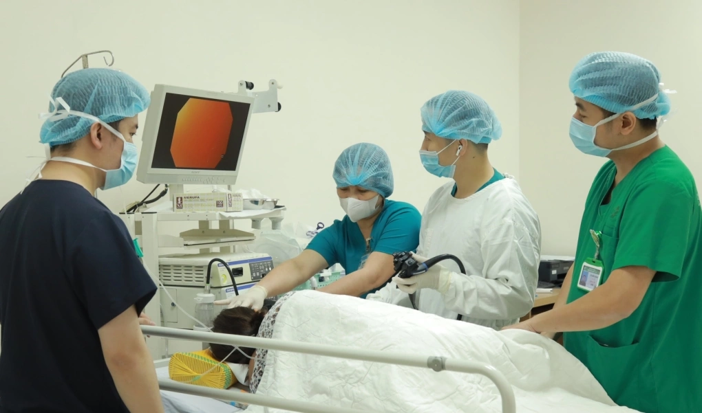

(Vnexpress) - Nội soi tiêu hóa gây mê đang được nhiều người lựa chọn nhờ không buồn nôn, giảm căng thẳng và giúp bác sĩ quan sát kỹ hơn để phát hiện tổn thương rất nhỏ, song không phải ai cũng phù hợp.
ThS.BS Trần Minh Tuấn, Chủ nhiệm Khoa Nội soi, Bệnh viện Quân y 175, cho biết xu hướng lựa chọn nội soi gây mê, thường gọi là "nội soi không đau", đang tăng lên trong thời gian gần đây, chủ yếu do giúp người bệnh dễ chịu hơn so với nội soi thông thường.
Trong quá trình này, người bệnh được dùng thuốc an thần qua đường tĩnh mạch để ngủ ngắn, nhờ đó giảm cảm giác buồn nôn, khó chịu và lo lắng khi đưa ống soi vào cơ thể. Khi cơ thể thư giãn, dạ dày không bị co thắt do phản xạ nôn ói, giúp bác sĩ quan sát niêm mạc thuận lợi, có thể phát hiện các tổn thương dù là rất nhỏ và đánh giá các tổn thương nghi ung thư sớm.
Việc thực hiện các thủ thuật như cắt polyp trong lúc nội soi cũng thuận lợi hơn. Sau khi tỉnh, đa số người bệnh cảm thấy tương đối thoải mái, xóa bỏ được nỗi ám ảnh về việc đi khám tiêu hóa.
Theo bác sĩ Tuấn, phần lớn trường hợp cắt polyp qua nội soi có thể về trong ngày, không cần nằm viện, nhưng vẫn cần theo dõi theo hướng dẫn. Nhiều người cũng lo lắng việc đưa ống soi vào cơ thể sẽ làm "hỏng" đường ruột. Thực tế, nội soi là phương pháp an toàn, sử dụng ống soi mềm có gắn camera siêu nhỏ, giúp bác sĩ quan sát trực tiếp và xử trí can thiệp kịp thời mà không gây tổn thương hệ tiêu hóa.
Về nguy cơ lây nhiễm chéo, bác sĩ Tuấn cho biết điều này sẽ không xảy ra tại các cơ sở y tế tuân thủ quy trình chuẩn. Chẳng hạn tại Bệnh viện Quân y 175, quy trình khử khuẩn được thực hiện nghiêm ngặt với hệ thống 8 máy rửa ống soi tự động, đảm bảo an toàn tuyệt đối. Các dụng cụ can thiệp trong thủ thuật đều chỉ được sử dụng một lần cho một người bệnh.

Bác sĩ Bệnh viện Quân y 175 nội soi cho bệnh nhân.
Gây mê nội soi không phải "mê sâu" như khi phẫu thuật. Thời gian nội soi dạ dày thường khoảng 5-7 phút, nội soi đại tràng khoảng 10-15 phút nếu không cần can thiệp thêm. Sau thủ thuật, người bệnh được theo dõi thêm một thời gian ngắn cho đến khi tỉnh táo hoàn toàn.
Trước khi thực hiện, bệnh nhân sẽ được bác sĩ đánh giá tình trạng sức khỏe để hạn chế rủi ro. Nội soi gây mê thường được cân nhắc với người dễ nôn ói, lo lắng nhiều hoặc cần can thiệp như cắt polyp. Ngược lại, phương pháp này có thể không phù hợp với người mắc bệnh tim mạch nặng, suy hô hấp, hen chưa kiểm soát, tiền sử dị ứng thuốc mê, phụ nữ mang thai hoặc không tuân thủ hướng dẫn trước thủ thuật.
Để ca nội soi diễn ra thuận lợi và cho kết quả chính xác, người bệnh nhịn ăn ít nhất 8 tiếng và ngừng uống nước 2 tiếng trước khi soi. Riêng với nội soi đại tràng, bệnh nhân phải uống thuốc làm sạch ruột theo đúng hướng dẫn của nhân viên y tế. Trước khi gây mê, cần thực hiện đầy đủ các xét nghiệm cận lâm sàng như đo điện tim, siêu âm tim... theo chỉ định.
Sau nội soi gây mê, bệnh nhân nên có người đi cùng và tránh lái xe, ký giấy tờ quan trọng trong vài giờ do thuốc an thần có thể còn tác dụng.
BÌNH LUẬN